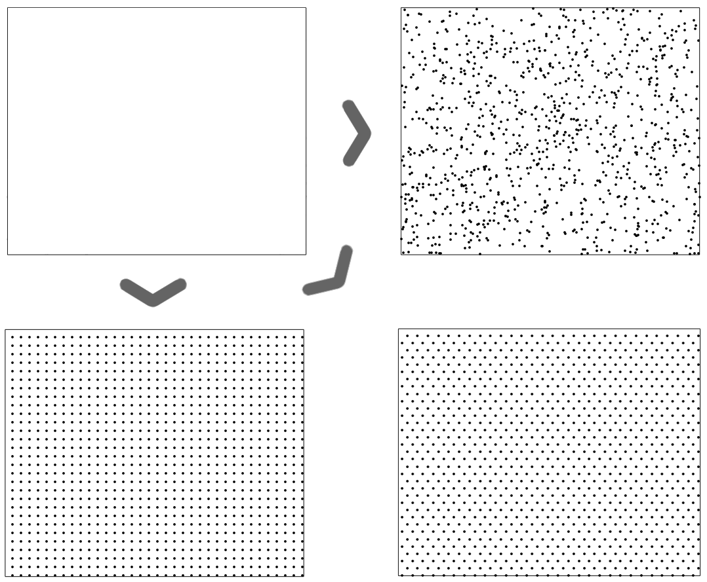
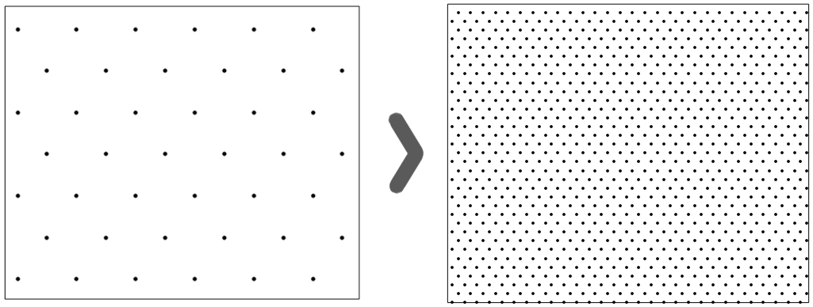
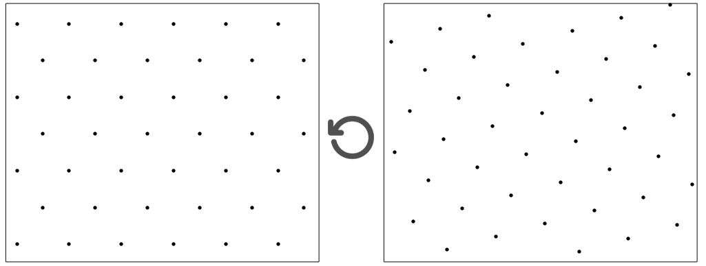

Sample Plotter
Generate sample plots by inputting a GeoJSON or Shapefile.
Sample Type:
Random
Systematic
Equidistant
Number of Points:
Rotation (degrees):
Three Sample Types:

Choose number of points:

Rotation:
